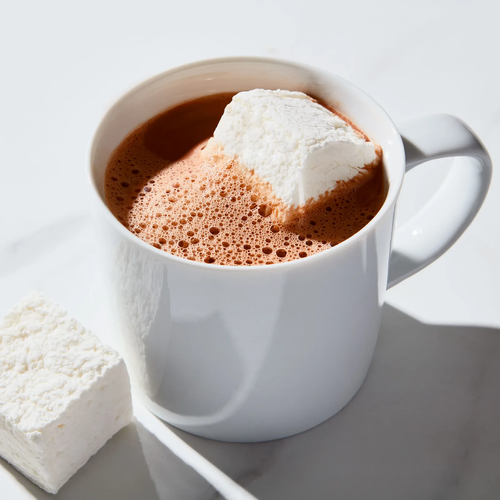

Cocoa

Description
As with hot chocolate, use any milky liquid you prefer,
whether it's from a cow, nuts (almond milk),
beans (soy milk), or grains (rice milk).
For sweeteners, feel free to substitute maple syrup, honey, or agave nectar for sugar, but start with less, about 1 tablespoon,
and taste the combination before adding more.
- 2 tablespoons unsweetened cocoa powder
- 1 to 2 tablespoons sugar (depending on how sweet you like it)
- Pinch of salt
- 1 cup milk or any combination of milk, half-and-half, or cream
- 1/4 teaspoon vanilla extract
- Whisk together the cocoa, sugar, salt, and about 2 tablespoons milk in a small saucepan over medium-low heat until cocoa and sugar are dissolved. Whisk in the rest of the milk and heat it over medium heat, whisking occasionally, until it is hot. Stir in the vanilla and serve.
- If you like it frothy, blend it in the blender.
- This recipe multiplies easily. When you get up to a quart of milk, use ¼ teaspoon salt.